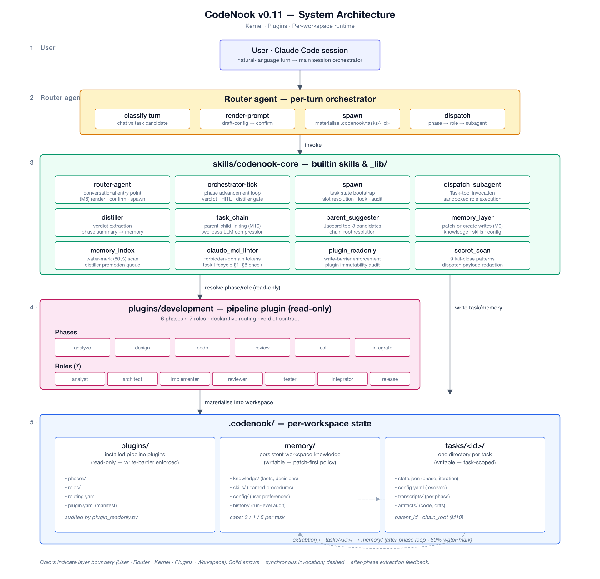

A two-layer framework —
codenook-core kernel
plus per-workspace
plugins/ — that turns
natural-language turns into audited, multi-phase software-engineering
work with persistent memory and task chains.
Quick Start · Architecture · Workflow · Memory · Chains · Extending · Gates · v6 Design Docs · Pipeline
CodeNook is a zero-runtime-dependency framework for driving software work through Claude Code or Copilot CLI. Every user turn is routed by a router-agent into a structured task; tasks are advanced one phase at a time by an orchestrator-tick state machine; each phase runs as an isolated sub-agent with a fully-rendered prompt; and after every phase the extractor-batch distills useful artefacts back into a workspace memory layer that future tasks read.
The current shipped surface (v0.11.1) is the v6 plugin
architecture — a kernel (skills/codenook-core/)
plus an installable development plugin
(plugins/development/) that defines the 8-phase
software-engineering pipeline. Other domains (writing, generic, …) ship
as additional plugins on the same kernel.
Vibe-coding alone produces undebuggable, untested code. Bolting full SDLC onto every chat is too heavy. CodeNook splits the difference:
.codenook/memory/, so the next task starts with everything
the previous one learned..codenook/tasks/<T-NNN>/ and
.codenook/memory/history/.CodeNook ships in two layers; the diagram at the top shows their relationship.
skills/codenook-core/ (the kernel)The kernel knows nothing about software engineering. It contains:
| Subsystem | Key skills |
|---|---|
| Routing | router-agent, router-context-scan,
router-dispatch-build |
| Orchestration | orchestrator-tick, dispatch-audit,
hitl-adapter, queue-runner,
session-resume |
| Memory | extractor-batch, knowledge-extractor,
skill-extractor, config-extractor,
distiller |
| Plugin install (12 gates) | install-orchestrator, plugin-format,
plugin-schema, plugin-id-validate,
plugin-version-check, plugin-signature,
plugin-deps-check, plugin-subsystem-claim,
plugin-shebang-scan, plugin-path-normalize,
sec-audit |
| Config & models | config-resolve, config-validate,
config-mutator, model-probe,
secrets-resolve, task-config-set,
preflight |
Helpers (_lib/) |
task_chain, parent_suggester,
chain_summarize, memory_layer,
memory_index, llm_call,
render_prompt, token_estimate,
workspace_overlay, claude_md_linter,
plugin_readonly, secret_scan |
Entry points: init.sh (workspace seed + plugin manager)
and install.sh (12-gate plugin installer).
plugins/development/ (the domain pipeline)A v6 plugin is a self-contained directory with a manifest
(plugin.yaml), a phase table (phases.yaml), a
transition table (transitions.yaml), HITL gates, role
profiles, dispatch templates, and prompts.
The shipped development plugin defines 8 phases:
clarify → design → plan → implement → test → accept → validate → shipmapped to 8 roles (clarifier, designer,
planner, implementer, tester,
acceptor, validator, reviewer)
with criteria prompts under
plugins/development/prompts/criteria-*.md and pytest-based
post-validators under plugins/development/validators/.
A workspace’s .codenook/ directory is the only place the
kernel writes:
.codenook/
├── plugins/<plugin>/ # read-only, copied at install (M2 atomic commit)
├── memory/
│ ├── knowledge/<topic>.md # workspace-promoted notes (LLM-judged)
│ ├── skills/<name>/ # extracted reusable skills
│ ├── config.yaml # single entries[] decision log
│ └── history/extraction-log.jsonl
├── tasks/<T-NNN>/
│ ├── state.json # phase, verdict, dual_mode, retry counts
│ ├── outputs/phase-N-*.md # role outputs (verdict frontmatter)
│ ├── .router-prompt.md # rendered router prompt (per turn)
│ └── audit/ # dispatch + extraction logs
└── state.json # workspace-level model catalog + configplugin_readonly and secret_scan enforce
that nothing outside tasks/ and memory/ is
mutated by the kernel; claude_md_linter keeps
CLAUDE.md clean of v0.11-prohibited content.
curl -sL https://raw.githubusercontent.com/cintia09/CodeNook/main/install.sh | bashThe installer detects Claude Code and/or Copilot CLI and copies the
kernel into the appropriate skills directory. The development plugin is
then installed per-workspace via init.sh.
From any project root:
cd ~/code/my-project
~/.claude/skills/codenook-core/init.sh # creates .codenook/
~/.claude/skills/codenook-core/init.sh --refresh-models # probe model catalog
~/.claude/skills/codenook-core/init.sh \
--install-plugin ~/.claude/skills/codenook-core/dist/development-*.tar.gzThis runs the 12-gate install pipeline
(install-orchestrator) and atomically commits the staged
plugin tree into .codenook/plugins/development/.
In your AI session:
“I want to add JWT login to the auth service.”
The main session calls
skills/builtin/router-agent/spawn.sh once. The
router-agent:
{{MEMORY_INDEX}},
{{PLUGINS_INDEX}}, {{TASK_CHAIN}},
{{USER_TURN}}.tasks/<T-NNN>/draft-config.yaml (plugin choice,
dual_mode, model tier, parent task suggestion).On confirm, spawn.sh --confirm materialises the plugin +
memory overlay into the task prompt and runs the first
orchestrator-tick. From then on every tick
advances one phase, dispatches the role sub-agent, runs the
post-validator, opens the next HITL gate (if any), and appends to the
audit log.
cat .codenook/tasks/T-001/state.json | jq .phase
cat .codenook/memory/history/extraction-log.jsonl | tail -5
ls .codenook/memory/knowledge/The end-to-end runtime loop, summarised — the full description with
diagrams lives in PIPELINE.md.
user turn
│
▼
router-agent.spawn ──► renders prompt with MEMORY_INDEX + PLUGINS_INDEX + TASK_CHAIN
│ drafts tasks/<tid>/draft-config.yaml
│ suggests parent task (Jaccard top-3) or "independent"
▼
user confirms
│
▼
spawn --confirm ──► overlays plugins/<p>/ + memory/ into task prompt
materialises tasks/<tid>/state.json, fires first tick
│
▼
orchestrator-tick (loop)
├─ load phase from plugins/<p>/phases.yaml
├─ dispatch_subagent → role sub-agent runs against criteria-*.md
├─ read_verdict from outputs/phase-N-<role>.md frontmatter
├─ post_validate (e.g. validators/post-implement.sh)
├─ extractor-batch → knowledge / skill / config extractors
│ (LLM-judged patch-or-create vs MEMORY_INDEX,
│ hash dedup, per-task caps 3/1/5)
├─ open hitl gate (if phases.yaml declares one)
└─ advance per transitions.yaml (ok / needs_revision / blocked)Every transition writes to tasks/<tid>/audit/,
every extraction writes to
memory/history/extraction-log.jsonl, and every model
invocation goes through _lib/llm_call.py so token + retry
policy is uniform.
The memory layer is a small, deterministic side-effect surface. There are exactly four artefact kinds:
| Path | Producer | Shape |
|---|---|---|
memory/knowledge/<topic>.md |
knowledge-extractor (after_phase) +
distiller (promotion) |
Markdown note, LLM-compressed, cross-task-relevant |
memory/skills/<name>/ |
skill-extractor |
Reusable skill skeleton (SKILL.md + scripts) |
memory/config.yaml |
config-extractor |
Single entries[] decision log; one entry per locked-in
decision |
memory/history/extraction-log.jsonl |
extractor-batch |
Append-only audit (one JSON line per extraction attempt) |
Three guarantees enforced by _lib/memory_layer.py:
memory_index (a precomputed digest of all current
knowledge files); the LLM either patches an existing note or creates a
new one. Hash dedup prevents identical content from landing twice.extractor-batch and water-marked at 80% of the prompt
budget.distiller consults
plugin.yaml.knowledge.produces.promote_to_workspace_when
boolean expressions to decide whether a plugin-local note promotes to
workspace-level memory/knowledge/.memory_index is what the router-agent injects into
{{MEMORY_INDEX}} on every turn — it is the only thing the
next task needs to know about everything the previous tasks learned.
Tasks form a DAG. When the router-agent prepares a turn it calls
_lib/parent_suggester.py, which:
independent).If a parent is chosen, _lib/chain_summarize.py walks the
ancestor chain, runs a two-pass LLM compression (first pass per-ancestor
summary, second pass chain-merge), and stays within an 8K token budget.
The result is injected into the child’s prompt as
{{TASK_CHAIN}}. This is how a follow-up turn like “now
add refresh-token support” automatically gets the original “add
JWT login” design + decisions without dragging in unrelated
history.
A plugin is a directory with the following minimum surface (see
plugins/development/ for the canonical example):
my-plugin/
├── plugin.yaml # M2 install manifest (id, version, requires.core_version, declared_subsystems)
├── config-defaults.yaml # tier_* model defaults + hitl/concurrency
├── config-schema.yaml # M5 config-validate DSL fragment
├── phases.yaml # ordered phase list (id, role, produces, gate, allows_fanout, …)
├── transitions.yaml # verdict → next-phase routing
├── entry-questions.yaml # required state fields per phase
├── hitl-gates.yaml # named gates referenced from phases.yaml
├── roles/<role>.md # role profiles (one per phase)
├── manifest-templates/ # phase-N-<role>.md dispatch templates
├── prompts/ # criteria-*.md (role-specific quality criteria)
└── validators/post-*.sh # optional post-phase validatorsBuild a tarball with init.sh --pack-plugin <dir>,
install with init.sh --install-plugin <tarball>. The
12-gate install pipeline checks well-formedness (G01), schema (G02), id
(G03), semver (G04), optional sha256 sig (G05),
requires.core_version (G06), subsystem collisions (G07),
security (G08 via sec-audit), shebang allowlist (G10), and
YAML path normalisation (G11). On success the staged tree is atomically
committed to .codenook/plugins/<id>/.
The verdict contract is the only thing roles must obey:
---
verdict: ok # or needs_revision / blocked
summary: <≤200 chars>
---
<human-readable body>orchestrator-tick.read_verdict reads only the
frontmatter; the body is for humans and downstream phases.
Every commit on this repo runs:
| Gate | Command | What it checks |
|---|---|---|
| Bats sweep | bats skills/codenook-core/tests/ |
851 assertions across 101 test files (M1–M11) |
claude_md_linter |
python3 skills/codenook-core/_lib/claude_md_linter.py --check-claude-md CLAUDE.md |
CLAUDE.md is free of forbidden surface |
plugin_readonly |
python3 skills/codenook-core/_lib/plugin_readonly.py --target . --json |
Kernel never mutates plugins/ outside install |
secret_scan |
python3 skills/codenook-core/_lib/secret_scan.py <files> |
No keys / tokens / connection strings |
| Greenfield grep | repo-wide grep for legacy version phrasing on user-facing docs | Top-level docs stay current with the shipped surface |
The kernel ships with bats fixtures for every gate failure mode under
skills/codenook-core/tests/fixtures/plugins/, so changes to
the install pipeline can be regression-tested deterministically.
v0.11.1 is the specification-consolidation milestone — M1–M11 are shipped, 851/851 bats green, 100 of 117 acceptance tests PASS / 13 PARTIAL / 4 SKIP. The deferred surface for v0.12 is small and well-scoped:
session-resume schema v2
(replace 10 M1-compat keys, rewrite m1-session-resume.bats
end-to-end).fcntl.flock to
close the multi-process snapshot TOCTOU window.Tracked in docs/release-report-v0.11.md
and docs/cleanup-report-v0.11.1.md.
| Doc | Purpose |
|---|---|
PIPELINE.md |
End-to-end runtime pipeline reference |
docs/README.md |
Index of the 9 v6 design docs + acceptance + execution reports |
docs/architecture.md |
Plugin architecture design (42 ratified decisions) |
docs/router-agent.md |
Router-agent specification |
docs/memory-and-extraction.md |
Memory layer + extraction policy |
docs/task-chains.md |
Parent suggestion + chain summarisation |
docs/requirements.md |
~70 FR / NFR (1162 lines) |
docs/acceptance.md |
117 acceptance tests |
docs/acceptance-execution-report.md |
100 PASS / 13 PARTIAL / 4 SKIP |
blog/vibe-coding-and-multi-agent.md |
Background essay |
CHANGELOG.md |
Release notes |
git checkout -b feat/my-feature)bats skills/codenook-core/tests/ and the four
quality gates above before committingCo-authored-by trailer if the work was AI-paired)mainMIT — see LICENSE.